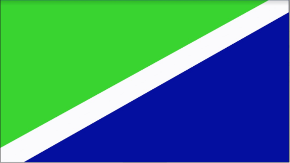

Elecciones de Costa Rica
Esta página encontrará los datos relevantes de los candidatos a la presidencia de Costa Rica 2022, también encontrará el resultado de las encuestas realizadas y un apartado para que usted vote.
| Partido político | Cantidato | Encuesta | Encuesta 2 |
| Natalia Díaz | 0,82% | - | |
 |
José María Villalta | 8,70% | - |
| José María Figueres | 27,26% | 47,16% | |
|  | Rodrigo Chaves | 16,70% | 52,84% |